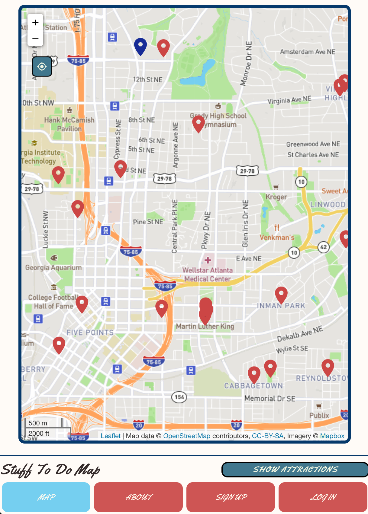
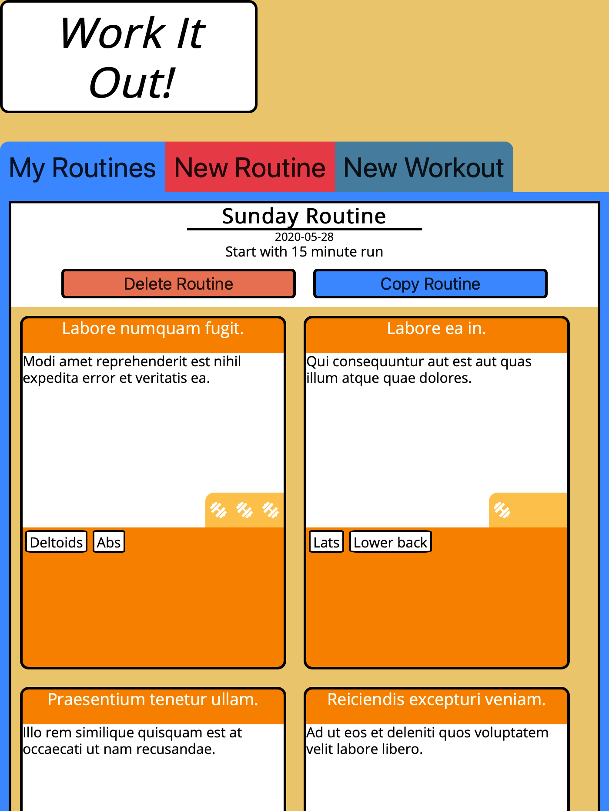

Hi, I'm Tyler Greason
I am a professional software developer specializing in web development. I attended Flatiron School’s immersive software engineering program where I learned the ins and outs of Ruby on Rails, Javascript, HTML5, CSS3, React, and Redux. I enjoy development of all kinds but am happiest seeing the fruits of my labor come to life on the frontend. I am currently seeking employment. You can find links to contact me below.
My background is in commercial building energy efficiency. For those that don’t know what that is, I like to relate it to being the professional version of your dad telling you to “close the front door because we’re not trying to air condition the whole world”. My goal was to help businesses save money on their energy costs through reduction of energy consumption or the implementation of more energy efficient equipment. I loved my career because I helped reduce harm to the environment caused by the production of energy, and I helped businesses save money that they could then put back into their business (or take that vacation they’ve always wanted, who knows).
I quickly hit a point in my career where I needed to go back to school for a higher degree to continue forward. Although I loved my time spent earning my Associate’s degree in Energy Management, I did not want to spend more time and money on school.
At the same time I had been exploring my growing interest in web development. I have always enjoyed art and design as a hobby and my favorite part of learning about energy efficiency was coming to understand how multiple parts of a building come together to create a complex system of energy use. The more I learned about web development the more interested I became. Soon I was infatuated with designing and styling my own websites, how each language contributes to the whole (much like parts of a building), and how developers always continue learning, no matter what. I decided it was the career path for me and I haven’t looked back since.
Besides web development, my interests include travel (5 continents visited so far!), art, sketching, working out (running, lifting, hiking, biking), gardening, and games (both analog and digital).
My background is in commercial building energy efficiency. For those that don’t know what that is, I like to relate it to being the professional version of your dad telling you to “close the front door because we’re not trying to air condition the whole world”. My goal was to help businesses save money on their energy costs through reduction of energy consumption or the implementation of more energy efficient equipment. I loved my career because I helped reduce harm to the environment caused by the production of energy, and I helped businesses save money that they could then put back into their business (or take that vacation they’ve always wanted, who knows).
I quickly hit a point in my career where I needed to go back to school for a higher degree to continue forward. Although I loved my time spent earning my Associate’s degree in Energy Management, I did not want to spend more time and money on school.
At the same time I had been exploring my growing interest in web development. I have always enjoyed art and design as a hobby and my favorite part of learning about energy efficiency was coming to understand how multiple parts of a building come together to create a complex system of energy use. The more I learned about web development the more interested I became. Soon I was infatuated with designing and styling my own websites, how each language contributes to the whole (much like parts of a building), and how developers always continue learning, no matter what. I decided it was the career path for me and I haven’t looked back since.
Besides web development, my interests include travel (5 continents visited so far!), art, sketching, working out (running, lifting, hiking, biking), gardening, and games (both analog and digital).
Let's get in touch
Projects

Stuff To Do Map
Stuff To Do Map was created as my final project for Flatiron School’s Immersive Software Engineering program. I was inspired to create it after traveling abroad in the summer of 2019. As I was journeying to new cities and looking online for things to do, I found a lack of sites that let me find things to do around my current location. I wanted to see a map, know where I was, and know what was around me, without having to wade through multiple listacles and look up addresses myself. Thus, Stuff To Do Map was born.
- Utilized LeafletJS and OpenStreetMap to quickly create a fully-featured and customizable map.
- Designed so users can create their own attractions, which can be rated by other users.
- Integrated OpenTripMap historical district data to ensure there was something to do in any location.
- Developed with React Redux for more DRY code, drastically increasing development speed.
- Used a Heroku-hosted Rails backend to make API calls, reducing the work done by the client’s machine.

Work It Out!
Work It Out was made for my third project for Flatiron School’s Immersive Software Engineering program. I wanted to build an application to track workouts that allowed me to easily copy old workout routines into a new field, make small edits, and create a new instance of that workout routine. I love to work out and do so weekly. I usually repeat workout routines each week with small variations, so the ability to quickly make copies of and edits to old workout routines seemed exciting and a great way to show my functional programming knowledge.
- Designed using BEM methodology for easily readable and maintainable CSS.
- Utilized SASS for quick development time and to ensure cross-browser functionality.
- Written using MVC design pattern, separating view responsibilities on the frontend from model and controller responsibilities on the backend.
- Frontend written using functional programming, keeping the code DRY and reusable.

Art Forum
Art Forum was created to exemplify my understanding of Ruby on Rails and proper web application construction, including proper routing, use of views, models, and controllers, and web page design. Art Forum was used for my mod 2 project during my time in Flatiron School's Immersive Software Engineering program.
The intent behind Art Forum was to make an application that could connect art lovers to each other. Each day a new image from The Metropolitan Museum of Art's API is added to the site's collection of images. Users are able to comment on images and add images to their list of favorite images.
- Implemented Metropolitan Museum of Art’s API to present pieces of art and their details to users.
- Enabled users to comment on art and mark pieces as their favorites.
- Designed using coolors.co to find an appealing color palette that left the art as the focus of each page.